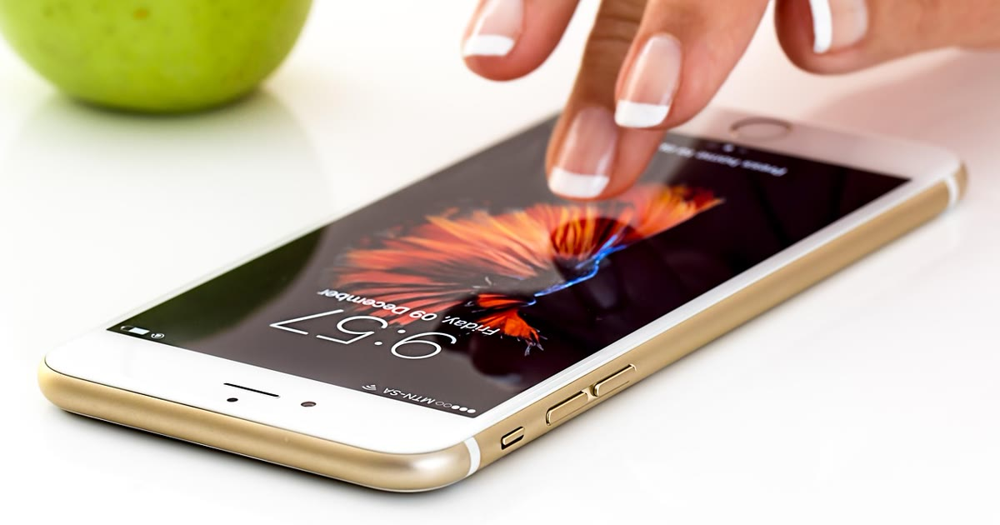

A escolha entre uma coleira GPS Bluetooth e uma com chip de operadora muda o que você pode esperar em termos de alcance, custo recorrente e dependência de outros aparelhos. Não existe uma opção "melhor" de forma absoluta — existe a mais adequada para a distância que o seu pet costuma percorrer.
O dispositivo se conecta ao celular do tutor via Bluetooth, e a localização só é útil enquanto o pet está dentro do alcance do sinal — geralmente alguns metros a poucas dezenas de metros. Fora dessa distância, o app perde a conexão e não consegue mais informar a posição atualizada.
Vantagens: geralmente mais barato, sem mensalidade, boa autonomia de bateria por não depender de rede móvel.
Limitação: inútil para localizar um pet que já se afastou muito de casa — é mais indicado para "não perder de vista" dentro de casa ou quintal.
O dispositivo usa um chip de dados móveis, como um celular simplificado, para enviar a localização pela internet, independente da distância entre o pet e o tutor. O alcance é limitado apenas pela cobertura de rede da operadora na região.
Vantagens: funciona a qualquer distância dentro da área de cobertura, útil para cães que realmente fogem para longe.
Limitação: costuma exigir mensalidade de dados e depende de haver sinal de celular no local — em áreas rurais isoladas, pode falhar.
veja como identificar coleiras realmente sem mensalidade
| Critério | Bluetooth | Chip de Operadora |
|---|---|---|
| Alcance | Curto (metros a dezenas de metros) | Amplo, dependente de cobertura |
| Mensalidade | Geralmente não | Geralmente sim |
| Depende do celular do tutor por perto | Sim | Não |
| Ideal para | Casa, quintal, pet que não se afasta muito | Cão que foge para longe, área externa grande |
Se o seu pet já tem histórico de fuga para distâncias maiores, o alcance limitado do Bluetooth pode simplesmente não resolver o problema no momento em que você mais precisa. Nesse cenário, vale considerar o custo da mensalidade do chip de operadora como parte do investimento em segurança, não como gasto evitável.
veja o guia específico para cães que fogem muito
entenda também como funciona a tecnologia de localização
Bluetooth funciona bem para monitorar um pet que fica em área conhecida e raramente se afasta; chip de operadora é a opção que realmente resolve o cenário de fuga para longe, com o custo de uma mensalidade. Definir isso antes de comprar evita o erro mais comum: escolher pelo preço e descobrir depois que o alcance não atende à necessidade real.
volte ao guia completo de coleira GPS para pet
Escrito pela Equipe Smart Pet Gadgets, redação especializada em comparativos de produtos pet no mercado brasileiro. Veja nossa política editorial e como verificamos as fontes citadas neste artigo.
🐾 Confira o preço e a disponibilidade atual no Mercado Livre.
Ver no Mercado Livre →Link de afiliado: podemos receber uma comissão por compras feitas através deste link, sem custo adicional para você.
Nildo Alves — curadoria de produtos pet no Smart Pet Gadgets. Testa e pesquisa produtos para cães e gatos, cruzando especificações de fabricante com boas práticas veterinárias e dados de mercado.
Sobre o Smart Pet Gadgets · Contato · Política editorial e de afiliados